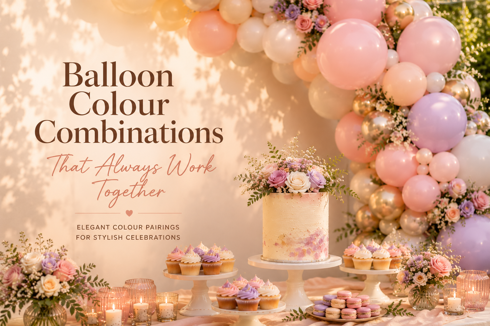

One of the most common questions we’re asked at Little Moment Studio is: “What balloon colours actually look good together?” It sounds simple, but colour harmony is one of the biggest factors separating a setup that looks professional from one that looks a little off.
The truth is, certain combinations are simply reliable. They create balance, warmth and visual coherence across a balloon display — and they translate beautifully onto a dessert table too. Whether you’re planning a baby shower, birthday, garden party or bridal event, these are the palettes we return to again and again.
1. Blush Pink & Cream
Blush pink and cream is one of the most consistently popular colour combinations we work with — and for good reason. It has a softness that suits almost every occasion, from first birthdays and baby showers to bridal events and engagement parties. The tones sit naturally together without competing, which is exactly what you want in a balloon display.
Adding soft gold accents — chrome gold balloons or gold ribbon — lifts the palette without changing its character. It shifts the overall feel from pretty to genuinely polished. This is a palette that photographs well in any light, and it’s equally suited to home celebrations and venue setups.
On the dessert table, this palette pairs naturally with ivory buttercream cupcakes, pale pink macarons, white florals and soft gold cake details. When the colours flow across the balloons and the table together, the whole setup reads as one considered moment rather than separate elements placed side by side.

2. Sage Green & Nude
Sage green and nude has become one of the most requested palettes across all event types over the past couple of years — and it’s held its ground. There’s something about this combination that feels genuinely current without being trend-dependent: it’s understated, it works beautifully in natural light, and it suits a wide range of venues and settings.
It’s particularly effective for garden parties, weddings, outdoor celebrations and neutral baby showers where clients want something that feels considered rather than themed. Adding champagne or warm nude tones deepens the palette without losing its freshness. This is one of the easiest combinations to make look expensive.
On the dessert table, sage and nude styling pairs well with textured buttercream cakes, neutral cupcakes, dried florals and eucalyptus greenery. Linen table runners and gold cutlery complete the look. The overall effect is warm without being sweet — exactly the balance many clients are looking for.
A Note on Natural Light
Sage green and nude tones respond particularly well to natural light — both in person and in photographs. If your event is outdoors or in a venue with large windows, this palette is a very strong choice. The colours deepen slightly as the light changes through the day, which adds rather than detracts from the overall look.

3. Peach, Coral & Gold
For clients who want something warmer and more energetic, peach and coral tones with soft gold accents are consistently strong. This is a summer-inspired palette that works particularly well for outdoor celebrations, garden parties and birthday setups where the event will run into the evening.
The colours sit in the warm half of the spectrum — peach into soft coral into champagne — so they blend naturally and create a layered, tonal effect in a garland. Gold chrome balloons add warmth and a premium finish without taking over. This combination photographs especially well when there’s natural or warm evening light.
On the dessert table, peach and coral tones pair well with apricot buttercream, citrus-inspired desserts, coral florals and warm candlelight. The palette sits comfortably alongside both children’s birthday setups and more grown-up outdoor celebrations, depending on how it’s styled.
4. Lilac & Pastel Blue
Lilac and pastel blue is a softer, airier combination that works particularly well for spring celebrations, children’s parties and baby showers. The tones sit closely enough together that they feel harmonious rather than contrasting, and the overall effect is calm and considered when styled correctly.
Adding white balloons throughout the garland is one of the most effective ways to keep this palette from feeling too sweet — white breaks up the colour and allows the lilac and blue to breathe. Pearl or soft shimmer accents can add a little depth without changing the overall character of the palette.
On the dessert table, this palette pairs well with pastel swirl cupcakes, lavender florals, pearl decorations and soft shimmer details. Pastel macarons add a photogenic finishing touch. This is a palette that works as well for unicorn-themed children’s parties as it does for elegant spring baby showers — the styling details are what shift it in either direction.
5. White, Sand & Champagne
For a genuinely timeless result, neutral palettes are one of the most effective choices available. White, sand and champagne create a clean, editorial look that suits a wide range of venues and feels premium without effort. This is the palette for clients who want the setup to feel considered and complete, without colour being the main event.
It works particularly well in spaces with natural light, modern interiors, exposed brick or warm candlelight. The tones shift subtly depending on the surrounding environment, which means the display looks different — and consistently good — across different lighting conditions throughout the day.
On the dessert table, neutral balloon palettes pair beautifully with textured buttercream cakes, ivory cupcakes, white florals, champagne candles and layered linens. Minimalist table styling with a few carefully chosen details produces the best results — this palette rewards restraint.
Why Colour Harmony Makes the Difference
The difference between a setup that feels “nice” and one that feels genuinely premium often comes down to colour harmony. The best balloon styling doesn’t use random colours that happen to be available — it carefully balances warm and cool tones, light and dark shades, matte and metallic finishes, and the colours of surrounding elements.
Knowing what to leave out matters as much as knowing what to include. A four-colour garland done well will always outperform a seven-colour one that hasn’t been thought through.
Before we finalise any colour palette, we always consider the venue’s existing tones, the lighting conditions at the time of the event, the dessert table styling, any florals and the backdrop. A colour that looks perfect in isolation can shift when it’s placed next to a cream wall or warm candlelight — which is why we always look at the full picture.
If you’d like to explore more ideas, our guide to the best balloon colour palettes covers what’s been popular and why certain combinations work across different event types.
Coordinating Balloons & Desserts
One of the most consistent things we see in the best-looking setups is that the balloon colours and the dessert table have been planned together. When the cupcake buttercream, the cake decorations and the florals are all chosen from the same palette as the balloons, the whole setup reads as a single designed moment — not separate elements assembled on the day.
At Little Moment Studio, we work alongside our trusted cake partner Berrylicious Cakes → for clients who want coordinated cakes and cupcakes alongside their balloon display. It’s the combination that consistently produces the most polished results.
Frequently Asked Questions
Ready to Choose Your Colour Palette?
Little Moment Studio creates balloon displays and styled celebration setups for birthdays, baby showers, weddings and more across Sittingbourne and Kent. Get in touch and we’ll help you find the right palette for your event.